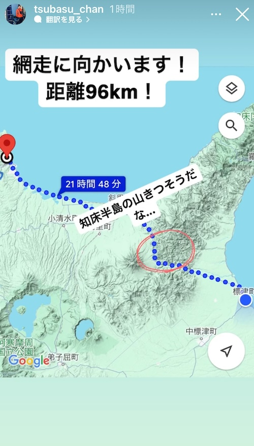
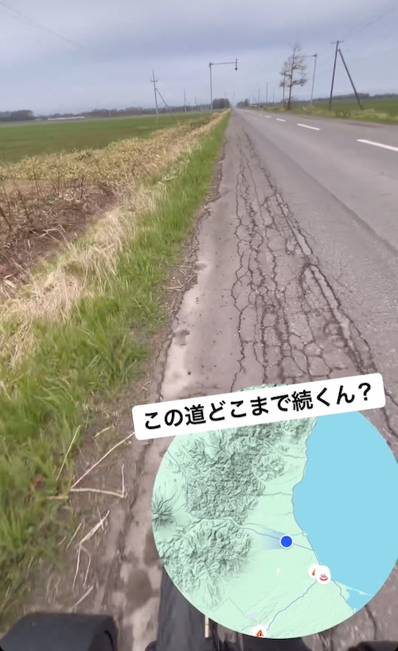

TSUBASAの旅 - 2024/05/06 曇りのち雨
雨の中の網走
TSUBASAの北海道旅。雨の中90kmって何修行なんでしょうね。
 果てしない北海道の山間道路をひたすら漕ぐTSUBASA。
果てしない北海道の山間道路をひたすら漕ぐTSUBASA。

母からの熊ニュースが連日配信されています。

網走についた時にはずぶ濡れ。気温5度切っている中時速20km近くで走っているって、どんだけ体力あるんでしょうね。10代スゴイ。
その頃父はLevelが111に到達していました。